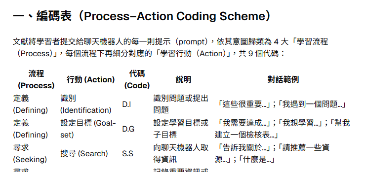

教學實踐計畫經驗分享｜歐姆學園
教學實踐計畫審查看什麼
教育部的定義「教師為提升教學品質……透過教育現場提出問題，並藉由課程設計、教材教法、或引入教具、科技媒體運用等方式，採取適當之研究方法及評量工具檢證成效之歷程。」
審查者常點出的四類問題
20%
計畫主持人
問題重要性、近 5 年教學經驗與成果的關聯
研究動機
以為新的就是創新；動機過於主觀，缺現象與文獻
研究目的
不夠具體，看不出「方案」與「效應」
80%
計畫執行內容
創新性、動機目的、文獻、方法、成果
文獻探討
與主題關聯低；缺乏可用於自己研究的歸納
研究方法
目標、活動、評量難以對應；工具效度不明
教學實踐計畫經驗分享｜歐姆學園
去年的計畫與審查意見
去年主題 師資生觀議課能力不足 → 以「課堂教學研究 × 數位融入」的 6 週課程培養 TPACK
主持人部分獲肯定 教學回饋 4.5 分以上、授課與研究經驗與計畫高度關聯
1時程與課程全貌
「……目前 18 週的課程僅呈現 6 週的規劃，建議提供更全面的課程規劃，讓審查者能理解整體課程設計的脈絡以及 6 週數位融入課程在整體課程中的適切性。」
2教材與教法
「……目前計畫書對於教學法發展或教材建構的部分較不明確，建議能補充說明……」
3課堂教學研究怎麼做
「然而，後續在課堂教學研究具體上將如何進行……，需要更詳細的說明，才能強化課堂教學研究此策略具有改善目前學生學習痛點的潛力」
4回饋反思怎麼教
「申請者具體上將如何做，才能協助師資生培養觀議課的能力以及回饋反思的能力，建議在這部分多加說明……」
委員質疑的是「課堂上到底怎麼做」
教學實踐計畫經驗分享｜歐姆學園
今年的修正：從問題到作法
新主題 運用 AI 融入教育政策分析課程促進學生批判思考與學習態度之行動研究
| 去年的問題 | 今年的作法 |
|---|---|
| 只規劃 6 週 | 18 週完整規劃，每週一項 AI 任務並對應學習單題目 |
| 教材教法不明 | GAI 四階段認知支架（議題發想、概念釐清、方案發想、評估檢視）結合 PBL |
| 缺工具與引導提問 | 歐姆學園「WPR 政策分析學習夥伴」以提問引導學生，不直接給答案 |
| 反思無從檢核 | 前後測量表、實作評量 rubric、反思寫作，加上對話紀錄編碼 |
創新性與延續性不是為新而新：沿用已開設多年的 PBL 政策分析課，把 AI 定位為「認知支架」，要求學生檢視、修正並標示哪些內容來自 AI。採行動研究「計畫—行動—觀察—反思」循環。
教學實踐計畫經驗分享｜歐姆學園
特點①：提示詞就是分析工具
1匯出對話紀錄
後台「匯出對話紀錄」，依班級或機器人、日期區間下載 Excel
2以文獻建立編碼表
提示詞：「請依據附件文獻，整理出編碼表以及對話行為的解釋」
3依編碼表編碼
提示詞：「請依據編碼表進行學生行為的編碼，並做成表格」


| 流程 | 代碼 |
|---|---|
| 定義 Defining | D.I 識別問題 D.G 設定目標 |
| 尋求 Seeking | S.S 搜尋 S.SL 篩選 |
| 投入 Engaging | E.RV 檢視 E.O 組織 E.RH 演練 |
| 反思 Reflecting | R.ET 任務評鑑 R.ES 自我評鑑 |
右上為以文獻產生的 Process–Action Coding Scheme。
教學實踐計畫經驗分享｜歐姆學園
特點②：分析結果具即時性


看見什麼
• 主導行為是「搜尋 → 組織」循環
• 「識別問題」（D.I）幾乎缺席，直接跳過定義階段
• 代碼 701「貼他人答案要求改寫」，可及早發現學術誠信風險
教學怎麼調整
強化 WPR「從解方反推問題」的引導，讓學生先說出問題。
回應去年意見反思怎麼教由機器人提問承擔，怎麼檢核由對話歷程提供證據。
左上為學生 × 9 項代碼的矩陣，左下為行為模式摘要；可進一步做認知網絡分析（ENA）。
教學實踐計畫經驗分享｜歐姆學園
AI 協助計畫撰寫的五項準則
| 準則 | 做法 |
|---|---|
| 人主導，AI 當鷹架 | 先做好個人筆記，AI 負責追問、檢查與挑戰 |
| 內容都要查證 | 每一筆文獻回到原文確認；AI 無法確認時標示「需查證」 |
| 使用要揭露 | 依補助機關與期刊規定，說明 AI 協助的範圍 |
| 資料要保護 | 未公開的計畫內容與學生資料，只在校內平台處理 |
| 責任屬於申請人 | 最後的每一句文字由申請人負全責 |
接下來三個機器人都依這五項準則設計：AI 是鷹架，不是代筆。
教學實踐計畫經驗分享｜歐姆學園
機器人①：計畫撰寫發想機器人
對應段落
研究動機與目的、計畫創新性與延續性
要避免的問題
以為新的就是創新；目的看不出方案與效應
你是教學實踐研究計畫的發想夥伴。使用者會描述課堂現場的問題。
請依序追問，每次只問一題：
1. 這個問題在課堂中如何被觀察到？
2. 既有作法是什麼？不足在哪裡？
3. 你打算如何改良？
4. 學生會出現什麼可以檢核的改變？
產出
「現場問題 → 方案 → 預期效應」對照表
設計原則
一次只問一題；不替使用者寫結論
去年就是缺了這條鏈：有理念，卻寫不出方案與效應。
教學實踐計畫經驗分享｜歐姆學園
機器人②：文獻引用觀點挑戰機器人
功能 逐條追問「這篇真的支持你的論點嗎？」，並提出反方觀點；協助擬定批判思考、網絡分析（如 ENA）等研究方向。
在我自己的初稿中找到的例子
| 引用 | 初稿中的用法 | 問題 |
|---|---|---|
| Dunn & Laing (2017) | 支持「初學者難以掌握政策分析」 | 原文探討政策制定者對資訊可信度、相關性、正當性（CRELE）的看法，與論點不符 |
| Schön (1983) | 支持 reflection-in-action | 後續引用如……才和這篇研究相關 |
請逐條檢視我引用的文獻：說明它實際支持的論點、與我研究問題的距離，並提出一個反方觀點。若無法確認文獻內容，請標示「需查證原文」，不得自行補寫書目。
教學實踐計畫經驗分享｜歐姆學園
機器人③：格式檢查機器人
同樣以我的初稿為例，機器人只負責標示，修正由作者判斷。
| 問題類型 | 初稿中的例子 |
|---|---|
| 年份不一致 | Badriyah et al. 內文 2024、列表 2025；Isnani 內文 2024、列表 2023；Creswell & Plano Clark 內文 2018、列表 2023 |
| 內文有、列表無 | Creswell & Poth (2018) |
| 列表有、內文無 | Weimer & Vining (2017)、Lesmana et al. (2023) |
| 作者不符 | 內文 Scupin & Raymond，列表只有 Scupin (1997) |
| APA 寫法 | et. al 應為 et al.；Elliott (1991) 後多一個空格與句點 |
| 內部一致性 | 研究問題仍寫「課堂教學研究」（去年主題殘留）；「教學政策分析」筆誤；表 1 兩列皆為 113-2 教育政策分析 |
請比對內文引用與參考文獻列表，逐項列出年份不符、缺漏、多餘、作者不符與 APA 格式錯誤，並檢查全文用詞是否前後一致。以表格輸出，不直接改寫原文。
教學實踐計畫經驗分享｜歐姆學園
下一步：擬投稿論文題目
Enhancing Undergraduate Students' Critical Thinking through a GenAI-Supported Policy Research Curriculum: An Action Research Study
資料來源
知能與量表前後測
對話紀錄編碼與 ENA
實作評量與反思寫作
預期貢獻
可複製的 AI 認知支架課程模式
以對話歷程資料檢核反思
給在座老師
歐姆學園的機器人、編碼提示詞與教材，歡迎共享與共備